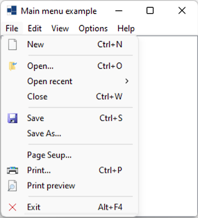
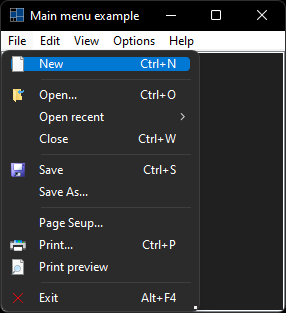
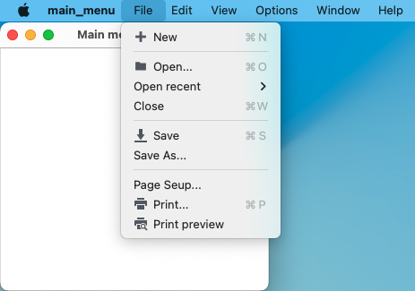
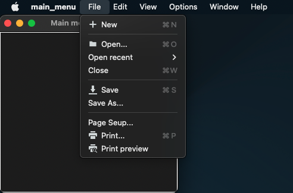
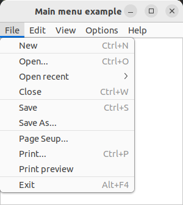
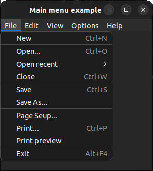

|
xtd
0.2.0
|
Loading...
Searching...
No Matches
main_menu.cpp
demonstrates the use of xtd::forms::main_menu component.
- Windows
- 

- macOS
- 

- Gnome
- 

#include <xtd/xtd>
namespace main_menu_example {
class form1 : public form {
public:
form1() {
text("Main menu example");
menu(main_menu1);
list_box1.parent(*this);
list_box1.dock(dock_style::fill);
}
protected:
void on_form_closing(form_closing_event_args& e) override {
e.cancel(message_box::show(*this, "Are you sure you want exit?", "Close Form", message_box_buttons::yes_no, message_box_icon::question) == dialog_result::no);
};
private:
void on_menu_click(object& sender, const event_args& e) {
list_box1.items().add(string::format("{} clicked", as<menu_item>(sender).text()));
list_box1.selected_index(list_box1.items().count() - 1);
if (file_exit_menu_item == sender) application::exit();
}
menu_item file_open_recent_file1_menu_item {"Path/File1", event_handler {*this, &form1::on_menu_click}};
menu_item file_open_recent_file2_menu_item {"Path/File2", event_handler {*this, &form1::on_menu_click}};
menu_item file_open_recent_file3_menu_item {"Path/File3", event_handler {*this, &form1::on_menu_click}};
menu_item file_open_recent_file4_menu_item {"Path/File4", event_handler {*this, &form1::on_menu_click}};
menu_item file_new_menu_item {texts::new_(), event_handler {*this, &form1::on_menu_click}, menu_images::file_new(), shortcut::ctrl_n};
menu_item file_separator1_menu_item {"-"};
menu_item file_open_menu_item {texts::open(), event_handler {*this, &form1::on_menu_click}, menu_images::file_open(), shortcut::ctrl_o};
menu_item file_open_recent_menu_item {"Open recent", {file_open_recent_file1_menu_item, file_open_recent_file2_menu_item, file_open_recent_file3_menu_item, file_open_recent_file4_menu_item}};
menu_item file_close_menu_item {texts::close(), event_handler {*this, &form1::on_menu_click}, shortcut::ctrl_w};
menu_item file_separator2_menu_item {"-"};
menu_item file_save_menu_item {texts::save(), event_handler {*this, &form1::on_menu_click}, menu_images::file_save(), shortcut::ctrl_s};
menu_item file_save_as_menu_item {texts::save_as(), event_handler {*this, &form1::on_menu_click}};
menu_item file_separator3_menu_item {"-"};
menu_item file_page_setup_menu_item {"Page &Seup...", event_handler {*this, &form1::on_menu_click}};
menu_item file_print_menu_item {texts::print(), event_handler {*this, &form1::on_menu_click}, menu_images::file_print(), shortcut::ctrl_p};
menu_item file_print_preview_menu_item {texts::print_preview(), event_handler {*this, &form1::on_menu_click}, menu_images::file_print_preview()};
menu_item file_separator4_menu_item {"-"};
menu_item file_exit_menu_item {texts::exit(), event_handler {*this, &form1::on_menu_click}, menu_images::file_exit(), shortcut::alt_f4};
menu_item edit_undo_menu_item {texts::undo(), event_handler {*this, &form1::on_menu_click}, menu_images::edit_undo(), shortcut::ctrl_z};
menu_item edit_redo_menu_item {texts::redo(), event_handler {*this, &form1::on_menu_click}, menu_images::edit_redo(), shortcut::ctrl_shift_z};
menu_item edit_separator1_menu_item {"-"};
menu_item edit_cut_menu_item {texts::cut(), event_handler {*this, &form1::on_menu_click}, menu_images::edit_cut(), shortcut::ctrl_x};
menu_item edit_copy_menu_item {texts::copy(), event_handler {*this, &form1::on_menu_click}, menu_images::edit_copy(), shortcut::ctrl_c};
menu_item edit_paste_menu_item {texts::paste(), event_handler {*this, &form1::on_menu_click}, menu_images::edit_paste(), shortcut::ctrl_v};
menu_item edit_separator2_menu_item {"-"};
menu_item edit_select_all_menu_item {texts::select_all(), event_handler {*this, &form1::on_menu_click}, shortcut::ctrl_a};
menu_item edit_separator3_menu_item {"-"};
menu_item edit_options_menu_item {texts::options(), event_handler {*this, &form1::on_menu_click}};
menu_item view_back_menu_item {texts::back(), event_handler {*this, &form1::on_menu_click}, menu_images::view_back()};
menu_item view_forward_menu_item {texts::forward(), event_handler {*this, &form1::on_menu_click}, menu_images::view_forward()};
menu_item view_separator1_menu_item {"-"};
menu_item view_show_menu_item {"Show", event_handler {*this, &form1::on_menu_click}};
menu_item view_hide_menu_item {"Hide", event_handler {*this, &form1::on_menu_click}};
menu_item options_value_a_menu_item {"Value A", event_handler {*this, &form1::on_menu_click}, menu_item_kind::check, true, shortcut::alt_1};
menu_item options_value_b_menu_item {"Value B", event_handler {*this, &form1::on_menu_click}, menu_item_kind::check, shortcut::alt_2};
menu_item options_value_c_menu_item {"Value C", event_handler {*this, &form1::on_menu_click}, menu_item_kind::check, true, shortcut::alt_3};
menu_item options_separator1_menu_item {"-"};
menu_item options_value_d_menu_item {"Value D", event_handler {*this, &form1::on_menu_click}, menu_item_kind::radio, as<shortcut>(keys::alt | keys::d)};
menu_item options_value_e_menu_item {"Value E", event_handler {*this, &form1::on_menu_click}, menu_item_kind::radio, true, as<shortcut>(keys::alt | keys::e)};
menu_item options_value_f_menu_item {"Value F", event_handler {*this, &form1::on_menu_click}, menu_item_kind::radio, as<shortcut>(keys::alt | keys::f)};
menu_item options_separator2_menu_item {"-"};
menu_item options_value_g_menu_item {"Value G", event_handler {*this, &form1::on_menu_click}, menu_item_kind::radio, as<shortcut>(keys::alt | keys::shift | keys::left)};
menu_item options_value_h_menu_item {"Value H", event_handler {*this, &form1::on_menu_click}, menu_item_kind::radio};
menu_item options_value_i_menu_item {"Value I", event_handler {*this, &form1::on_menu_click}, menu_item_kind::radio};
menu_item help_about_menu_item {texts::about(), event_handler {*this, &form1::on_menu_click}};
menu_item file_menu_item {texts::file(), {file_new_menu_item, file_separator1_menu_item, file_open_menu_item, file_open_recent_menu_item, file_close_menu_item, file_separator2_menu_item, file_save_menu_item, file_save_as_menu_item, file_separator3_menu_item, file_page_setup_menu_item, file_print_menu_item, file_print_preview_menu_item, file_separator4_menu_item, file_exit_menu_item}};
menu_item edit_menu_item {texts::edit(), {edit_undo_menu_item, edit_redo_menu_item, edit_separator1_menu_item, edit_cut_menu_item, edit_copy_menu_item, edit_paste_menu_item, edit_separator2_menu_item, edit_select_all_menu_item, edit_separator3_menu_item, edit_options_menu_item}};
menu_item view_menu_item {texts::view(), {view_back_menu_item, view_forward_menu_item, view_separator1_menu_item, view_show_menu_item, view_hide_menu_item}};
menu_item options_menu_item {texts::options(), {options_value_a_menu_item, options_value_b_menu_item, options_value_c_menu_item, options_separator1_menu_item, options_value_d_menu_item, options_value_e_menu_item, options_value_f_menu_item, options_separator2_menu_item, options_value_g_menu_item, options_value_h_menu_item, options_value_i_menu_item}};
menu_item help_menu_item {texts::help(), {help_about_menu_item}};
main_menu main_menu1 {file_menu_item, edit_menu_item, view_menu_item, options_menu_item, help_menu_item};
list_box list_box1;
};
}
auto main() -> int {
application::run(main_menu_example::form1 {});
}
Generated on Fri Nov 21 2025 20:03:04 for xtd by Gammasoft. All rights reserved.